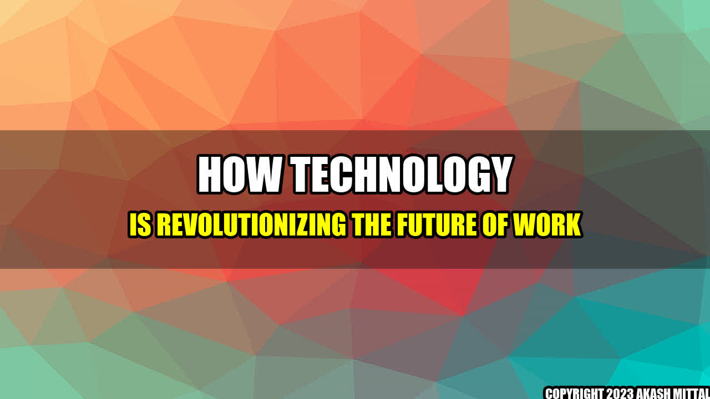

How Technology is Revolutionizing the Future of Work
Imagine you are a construction worker, tasked with building a bridge. Instead of using traditional tools like hammers and chisels, you use cutting-edge technology like 3D printing, robotics, and drones to design, build, and inspect the bridge.
This is just one example of how technology is revolutionizing the future of work. From manufacturing to healthcare to education, technology has transformed the way we work and live.
Let's take a closer look at some real-life examples:
- Humana, a healthcare company, uses artificial intelligence to improve patient care and lower costs.
- Amazon, an e-commerce company, uses automation and data analytics to manage inventory and reduce waste at Whole Foods.
- Vodafone, a telecommunications company, uses AI, big data, and IoT to improve customer engagement and personalize services.
As you can see, technology has enabled these companies to work smarter, faster, and more efficiently. But what does this mean for the future of work?
Here are three critical comments to consider:
- Technology is not a panacea. It can improve productivity and efficiency, but it cannot replace human creativity and critical thinking.
- There is a risk of job displacement. As technology becomes more advanced, certain jobs may become obsolete, requiring workers to develop new skills and adapt to new roles.
- There may be ethical and societal implications. For example, AI can be programmed with biases that perpetuate discrimination or algorithms can be used to automate hiring practices, potentially perpetuating inequality.
Akash Mittal Tech Article
Share on Twitter Share on LinkedIn